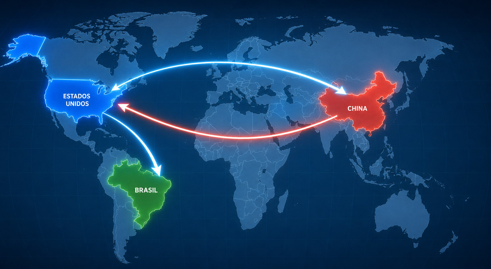
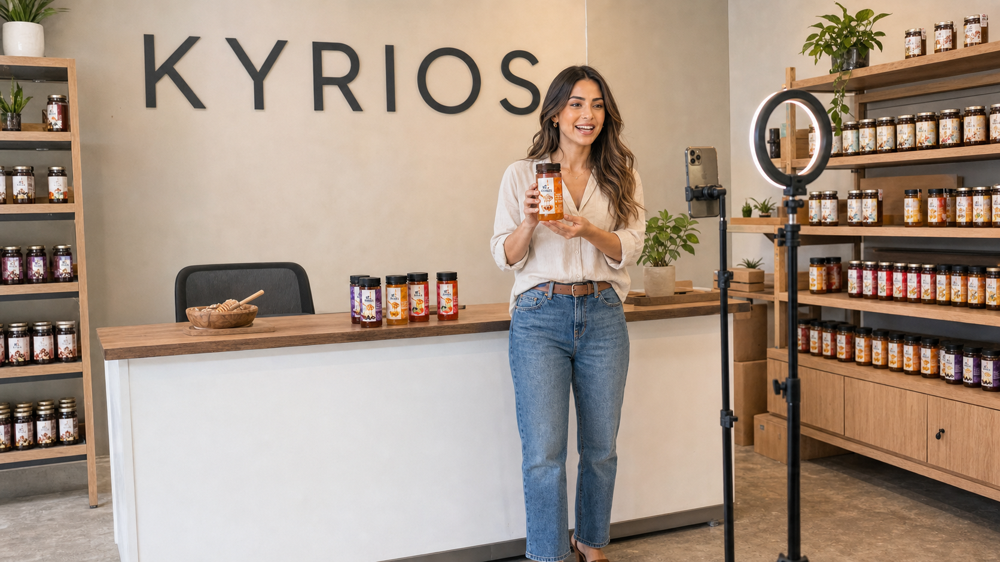

O novo mercado não procura apenas currículos. Procura talentos digitais.
A AllfawiseHR conecta candidatos e empresas às profissões que estão nascendo da nova economia digital: vendas ao vivo, social commerce, atendimento online, marketplaces, inteligência artificial aplicada e comunicação em tempo real.
Fundada por um brasileiro nos Estados Unidos, a AllfawiseHR nasce com uma visão global: observar o que já acontece em mercados como China e EUA, entender o crescimento do digital no Brasil e preparar pessoas para oportunidades que estão apenas começando.

China, EUA e Brasil conectados por uma nova forma de vender.
China começou. EUA aceleraram. Brasil está abrindo espaço.
Live Seller é uma nova oportunidade para pessoas comunicativas que querem entrar no mercado digital. Hoje faltam profissionais preparados para vender ao vivo, apresentar produtos, conversar com o público e gerar conexão com marcas e consumidores.
Você não precisa começar pronto. Candidatos selecionados poderão ser preparados por profissionais com experiência internacional.
As profissões do futuro já começaram.
O profissional do futuro não é apenas técnico. Ele é comunicador, adaptável e digital. A próxima fase do trabalho pertence a pessoas que conseguem aprender rápido, usar tecnologia, se comunicar bem, entender o comportamento do consumidor e gerar valor em ambientes digitais.
Durante anos, vender online parecia depender apenas de catálogo, preço e tráfego. Agora o jogo mudou: o cliente quer ver o produto em uso, conversar, tirar dúvidas, confiar na pessoa que apresenta e sentir segurança antes de comprar.
Amazon, Mercado Livre, Shopee e TikTok Shop mostram que o comércio digital está ficando mais interativo. A venda não acontece apenas na página do produto. Ela acontece no vídeo, na live, no atendimento, no conteúdo, no relacionamento e na capacidade de responder rápido.
Por isso, novas funções estão ganhando espaço: Live Seller, Live Service, Social Commerce, atendimento digital, produção de conteúdo, suporte com IA e profissionais capazes de representar marcas com naturalidade. Live Seller é o projeto principal da AllfawiseHR agora; as demais são oportunidades de apoio, para quem busca outro caminho.
Live Seller
Apresentar produtos ao vivo e vender por meio de lives e redes sociais.
Ver detalhes →Live Service
Atendimento digital, suporte e relacionamento com clientes online.
Ver detalhes →Social Commerce
Redes sociais, conteúdo, influência e apoio a campanhas digitais.
Ver detalhes →IA aplicada ao trabalho digital
Tecnologia como apoio a vendas, atendimento, conteúdo e produtividade.
Ver detalhes →Vendas ao vivo, comunicação e social commerce.
Live Seller é o profissional que apresenta produtos ao vivo, conversa com o público, responde dúvidas e ajuda empresas a venderem por meio de lives, redes sociais e plataformas digitais. Essa função une comunicação, carisma, vendas, celular, redes sociais e treinamento.
Para muitas pessoas, essa oportunidade pode começar como uma renda extra. Para quem se prepara e leva a sério, pode se tornar uma nova profissão no mercado digital.

Comunicação
Vendas ao vivo
Social commerce
Treinamento e prática
Onde vender ao vivo virou parte da cultura digital
Na China, o live commerce deixou de ser novidade e se tornou uma forma comum de comprar e vender. Muitas pessoas assistem a transmissões ao vivo para conhecer produtos, tirar dúvidas e decidir a compra em tempo real. A live deixou de ser apenas entretenimento e passou a fazer parte da rotina de consumo digital. Esse cenário mostra algo importante: quando existe comunicação, confiança e demonstração ao vivo, a venda se torna mais próxima, mais humana e mais interativa.
Quando redes sociais começaram a vender de verdade
Nos Estados Unidos, esse movimento cresce ligado à creator economy, aos vídeos curtos, aos afiliados, ao TikTok Shop e às compras dentro das redes sociais. O consumidor americano está cada vez mais acostumado a descobrir produtos por meio de pessoas: alguém apresentando, testando, explicando, comparando e recomendando. Com a expansão do social commerce, novas funções estão surgindo. As marcas precisam de pessoas que saibam comunicar, aparecer diante da câmera, criar conexão e transformar atenção em venda.
Um mercado novo para quem quer aprender antes
No Brasil, esse mercado ainda está em formação, enquanto o comércio eletrônico e o uso de redes sociais continuam crescendo. Muitos brasileiros já passam horas por dia no celular, assistem a vídeos, seguem influenciadores e compram pela internet. O comportamento já existe. Agora, o mercado começa a criar novas formas de transformar comunicação em oportunidade profissional. Para quem gosta de falar com pessoas, apresentar produtos, aprender vendas e usar redes sociais, o Live Seller pode ser uma nova habilidade. Em alguns modelos, essa atuação pode acontecer de casa, usando celular, treinamento e prática. Não é promessa de dinheiro fácil. É uma oportunidade para quem entende que o mercado está mudando e quer se preparar antes que essa função se torne comum.
O que já é forte na China, cresce nos Estados Unidos e começa a ganhar espaço no Brasil pode abrir uma nova porta para brasileiros que desejam trabalhar com comunicação, vendas e mercado digital.
A AllfawiseHR organiza caminhos diferentes para pessoas em momentos diferentes: quem quer começar por Live Seller, quem busca outras oportunidades e quem deseja permanecer no banco de talentos.
Quero ser Live Seller
O projeto principal da AllfawiseHR neste momento. Para pessoas comunicativas, treináveis e interessadas em aprender uma nova profissão ligada a vendas ao vivo, redes sociais e social commerce.
Ver processo Live SellerQuero outras oportunidades
Para candidatos interessados em atendimento digital, IA aplicada, social commerce, marketing, comunicação, áreas administrativas e suporte a operações digitais. Uma alternativa secundária ao projeto Live Seller.
Ver vagas disponíveisBanco de talentos
Para quem ainda não encontrou a vaga ideal, mas quer deixar seu perfil ativo para futuras oportunidades e processos de triagem.
Entrar no bancoCadastre-se para o processo de Live Seller
Preencha o formulário abaixo para participar da triagem do projeto Live Seller. Se o seu perfil for selecionado, você poderá ser convidado para o treinamento gratuito e avançar nas próximas etapas do processo.
Para quem gosta de se comunicar
Para quem usa redes sociais
Para quem quer aprender
Para quem tem celular com câmera e internet
Para quem busca renda extra ou trabalho de casa
Cadastre seu interesse
Preencha seus dados para saber mais sobre oportunidades de Live Seller, Live Service e banco de talentos.
Como funciona a triagem?
Você preenche o cadastro.
A equipe avalia seu perfil.
Candidatos com potencial recebem contato pelo WhatsApp.
Você pode participar de uma apresentação ou treinamento inicial.
Depois, poderá ser conectado a oportunidades com marcas e empresas.
Preencher o cadastro não garante contratação imediata. Esta é uma triagem para identificar pessoas com perfil comunicativo e interesse em aprender uma nova habilidade no mercado digital.
Oportunidades organizadas por perfil, não por confusão.
Cada vaga deve ter uma página própria, com descrição, requisitos, etapas e formulário. Isso deixa o site mais limpo, mais profissional e mais fácil para o candidato tomar decisão.
Live Seller
Para pessoas comunicativas que querem apresentar produtos, vender ao vivo e participar do crescimento do social commerce.
Ver detalhes da vagaLive Service
Para quem tem perfil de atendimento, relacionamento com clientes, suporte e comunicação online.
Ver detalhes da vagaIA aplicada ao trabalho digital
Para pessoas que desejam usar IA para apoiar vendas, atendimento, conteúdo, produtividade e operações digitais.
Ver detalhes da vagaSocial Commerce
Para perfis conectados a redes sociais, conteúdo, influência, campanhas digitais e apoio comercial.
Ver detalhes da vagaBanco de Talentos Allfawise
Para quem deseja deixar seu perfil disponível para futuras oportunidades digitais.
Cadastrar perfilCandidatar-se para esta oportunidade
Preencha este formulário se você deseja ser considerado para outras oportunidades profissionais divulgadas pela AllfawiseHR, como vagas em tecnologia, inteligência artificial, comunicação, vendas, atendimento, administrativo, recursos humanos, marketing e outras áreas — ou para entrar no banco de talentos. Este cadastro é uma alternativa para quem não busca especificamente o projeto Live Seller.
Um único cadastro para várias vagas
Escolha a vaga de interesse na lista
Também serve para o banco de talentos
Cadastro para Outras Vagas
Preencha seu cadastro em poucas etapas rápidas. Leva menos de 2 minutos.
Sua empresa precisa de pessoas comunicativas para vender ao vivo?
A Allfawise ajuda empresas a encontrarem talentos treináveis para atuar em Live Seller, live commerce, social commerce e vendas digitais. Nosso foco é conectar empresas a pessoas com potencial de comunicação, aprendizado e atuação no novo mercado digital.
Apresentadores para lives de vendas
Pessoas comunicativas para demonstrar produtos
Talentos para social commerce
Profissionais treináveis para vendas digitais
Banco de talentos para novas campanhas
Apoio na triagem inicial de candidatos
Como a AllfawiseHR pode contratar, recrutar e treinar Live Sellers para sua empresa
Recrutamento e triagem inicial de candidatos a Live Seller
Preparação e treinamento básico antes da conexão com a empresa
Banco de talentos para novas campanhas e demandas futuras
Divulgação de vagas digitais complementares
Contato institucional
Formulário de orçamento
Este formulário é separado do formulário de candidatura. Use este espaço para solicitar uma proposta comercial para sua empresa.
A inteligência artificial como apoio ao trabalho humano.
A inteligência artificial está transformando a forma como empresas vendem, atendem e se comunicam com clientes. Na Allfawise, enxergamos a IA como uma ferramenta de apoio ao trabalho humano. O futuro pertence a pessoas que sabem comunicar, aprender rápido, usar tecnologia e se adaptar às novas oportunidades digitais. Por isso, além do foco em Live Seller, acompanhamos as mudanças do mercado para preparar pessoas e empresas para novas formas de trabalho.
IA para produtividade
Apoio às tarefas do dia a dia, sem substituir a comunicação humana.
Aprendizado rápido
Pessoas que aprendem e se adaptam se destacam no mercado digital.
Mercado digital
Novas formas de vender, atender e se relacionar com clientes.
Uma ponte entre pessoas e empresas no novo mercado digital.
A Allfawise nasceu para criar uma ponte entre pessoas e empresas no novo mercado digital. De um lado, existem empresas que precisam de talentos comunicativos, treináveis e preparados para vender de novas formas. Do outro, existem pessoas que querem uma nova oportunidade, renda extra, trabalho remoto ou uma entrada no mercado digital. A Allfawise conecta esses dois mundos.
Peterson Fogaça dos Santos
A Allfawise foi fundada por Peterson Fogaça dos Santos, psicólogo, escritor e empreendedor. Com experiência em desenvolvimento humano, recrutamento, treinamento e comunicação, Peterson criou a Allfawise para conectar pessoas a oportunidades reais no mercado digital e ajudar empresas a encontrarem talentos preparados para novas formas de vender e se relacionar com clientes.
Peterson Fogaça dos Santos
Fundador da Allfawise